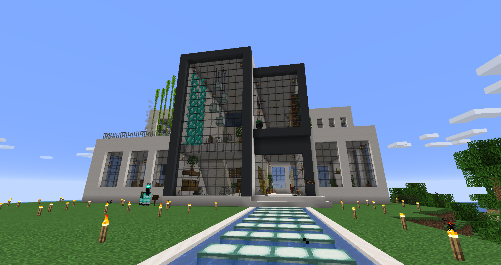

World Update April 10, 2021
April 10, 2021

This is the first building that we have built, it has been renovated several times. It features a courtroom and netherportal in the basement as well as a beacon integrated into the roofline.

This is Senara and Disala's house, it features a modern house design with a beautiful interior with a view to the ocean.


This is Elwin's house, design and built by Disala. It has a cozy woden interior with lots of room to expand. It has an amazing farm and advanced elevator system.
The McDonalds features 3 full level butchers with a drivethru, and it is complemented by the villager trading post next door for all other villigers which helps provide us with resourses.

To the left a temple with a massive nether portal for quick travel. The picture to the right is a house Disala built for his brother.

This is a picture of Arib's dirt. The next picture shows Hassan's amazing cabin built from quartz.
Using /home
Jan 1, 1999

For everyones convience a plugin called UltimateHomes has been installed.
As per thier website, the plugin
UltimateHomes lets players create their own personal warps (called homes) in the world that they can teleport back to at any time with a command. The plugin comes with many customization features like limits, warmups, and more to fit into your server seamlessly.
Here are a list of the avliable commands as well as how they work.
/sethome [name]
- Use this command to set the location of a home
- Example of command: /sethome beach
- Example sets your current location as a home locational called 'beach'
/home [name]
- Use this command to go to alocation of a home
- Example of command: /home beach
- Example takes you to the location of a home called 'beach'
/delhome [name]
- Use this command to delete one of your saved locations ( works from anywhere in the map)
- Example of command: /delhome beach
- Example deletes the location save of a home called 'beach'
/homes
- Use this command lists all of your saved locations.
Minecraft Server Info 1
April 10, 2021
There are two servers, one survival and one creative. Both currently running 1.16.5
People are mainly intrested in the survival one so I will bring up a few points.
- Cheats are disabled for everyone.
- Ultimate Homes aka teleport to home is installed, Click here to learn how to use it.
- The server is backedup regularly and will be restored to a previous version if the circumstances dictate it.
The ip addresses for these servers are as follows:
Survival: ott.stefantodorovic.com:420
creative: ott.stefantodorovic.com:421
Both of these servers require for your account to be whitelisted, please contact to be added.
This website is very image heavy, it will be archived in the future so that only a small amount of images need to load at a time, until them I'm just gonna be lazy and I hope your internet is good.